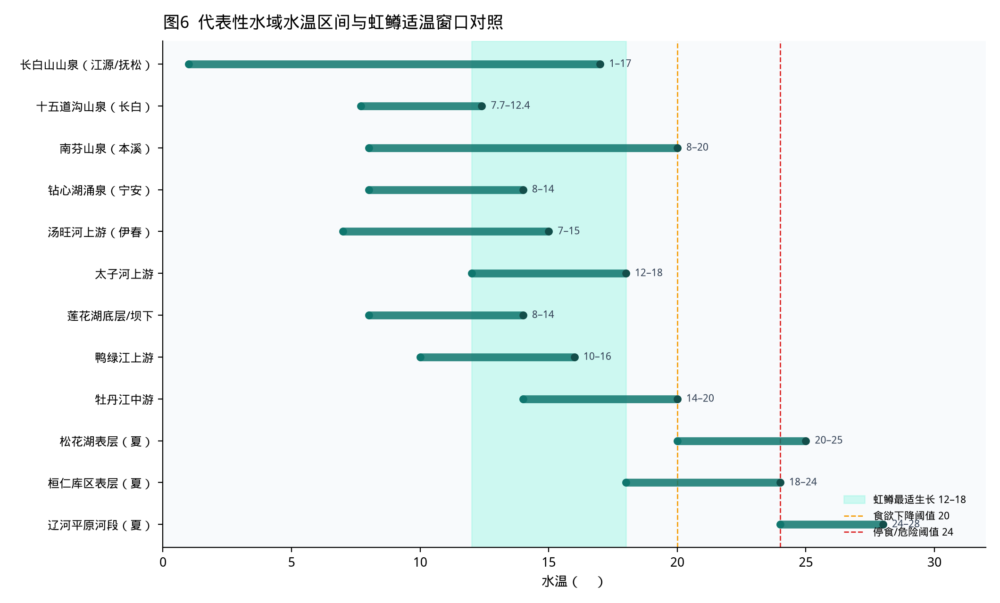
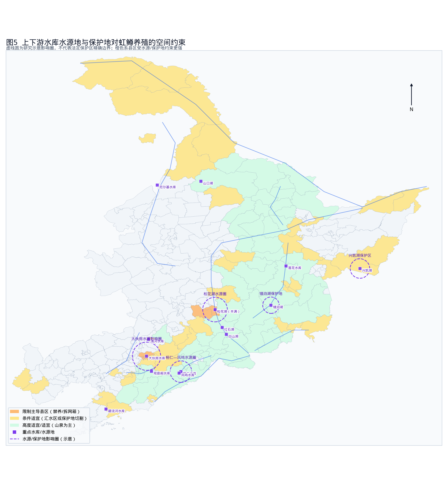
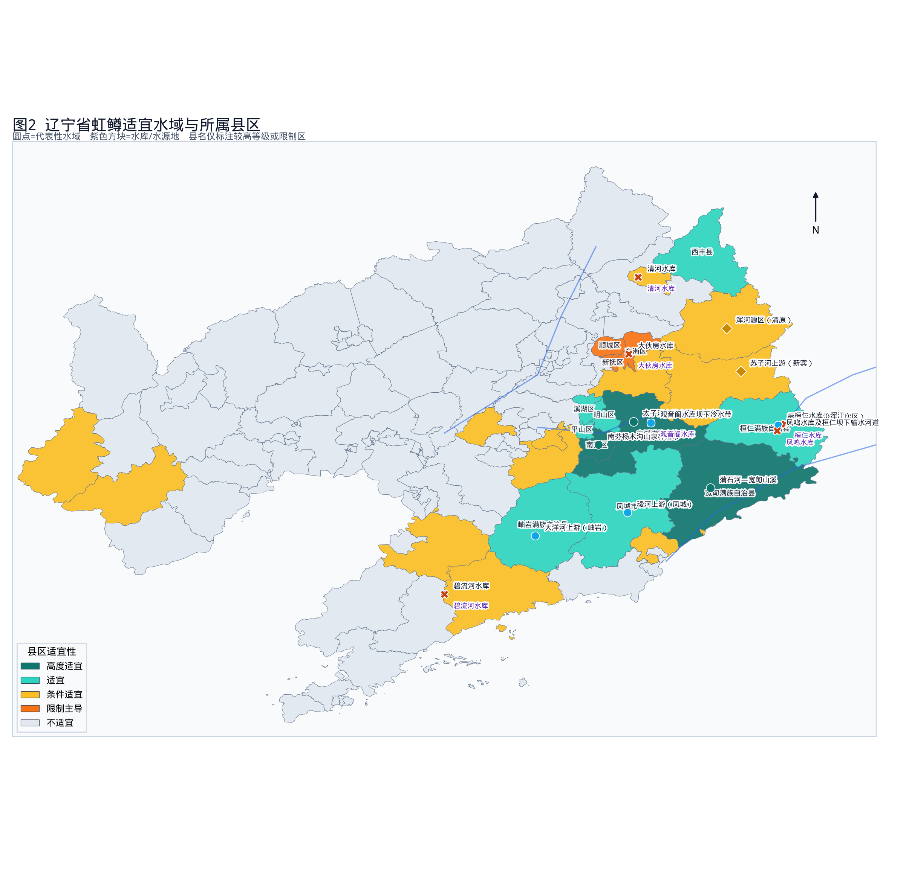
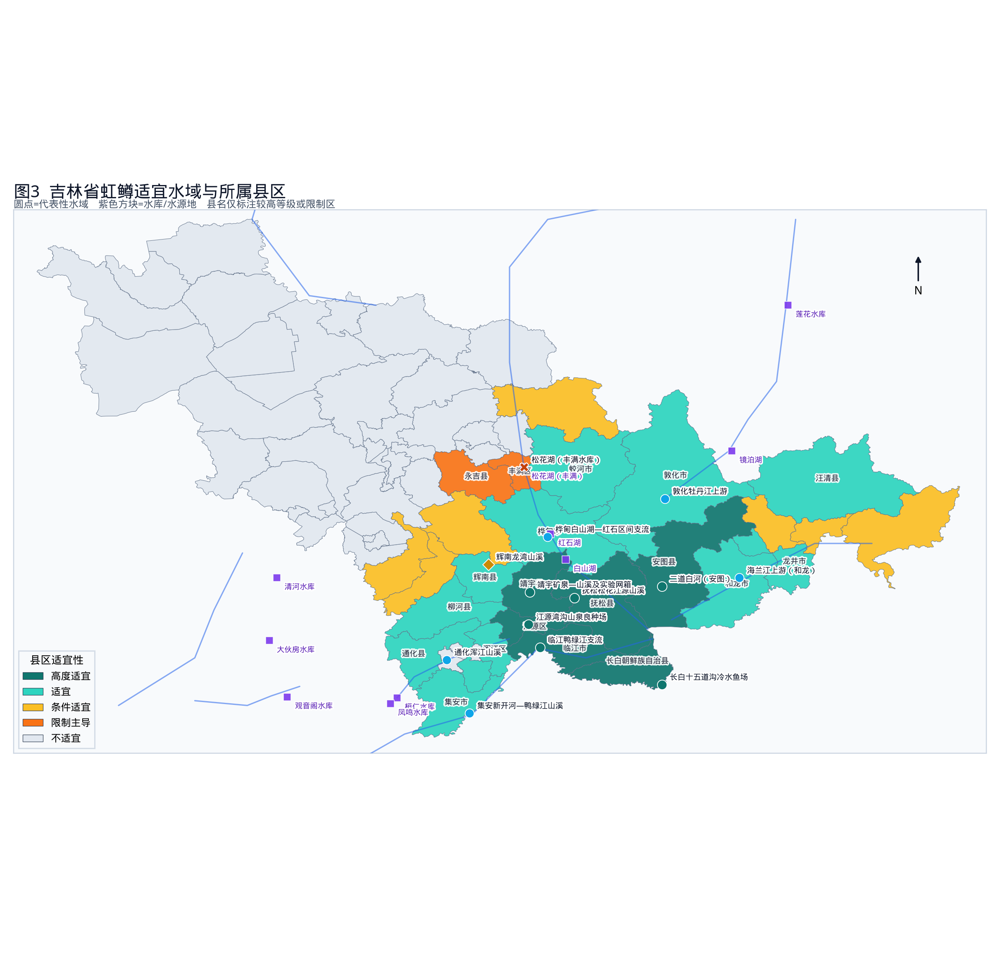
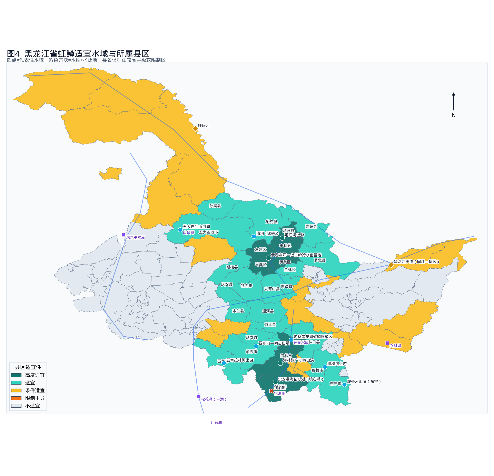
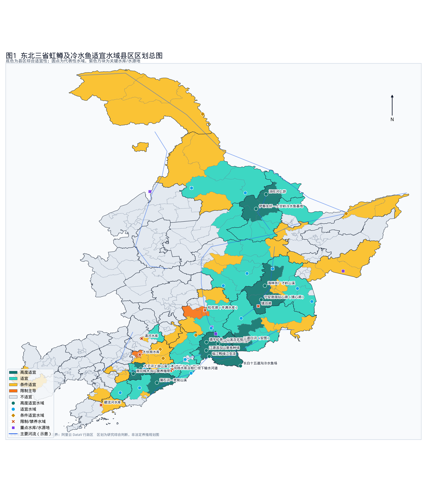
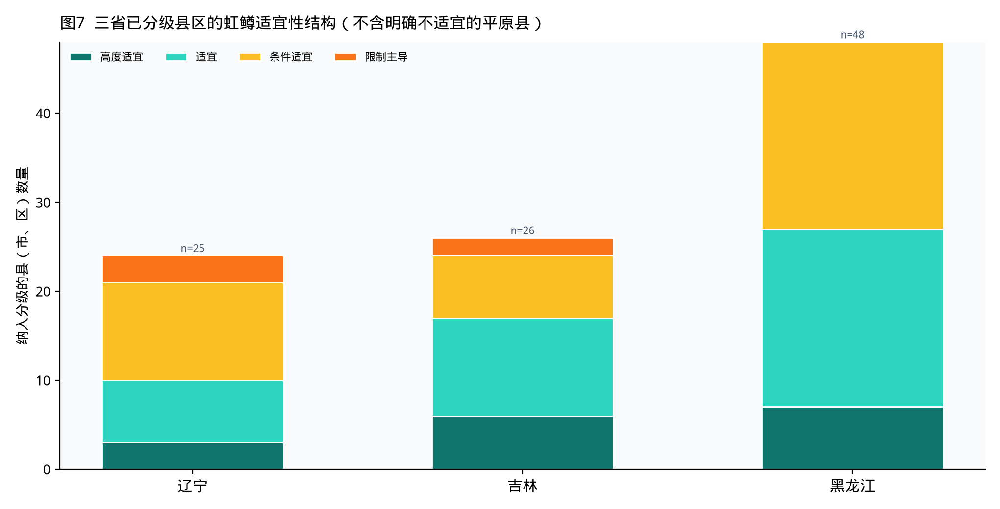
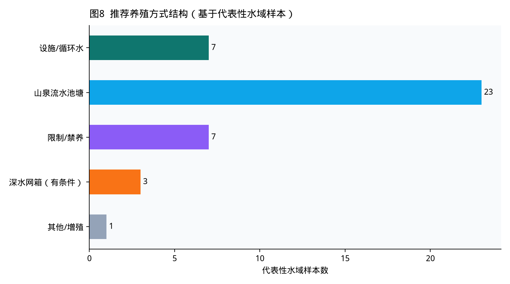

虹鳟（Oncorhynchus mykiss）是东北三省最具代表性的引进冷水性养殖鱼类。1959年发眼卵落户黑龙江宁安渤海后，产业沿长白山—张广才岭—辽东山地扩展，形成“山泉流水为主、水库坝下为辅、大水面网箱审慎试点”的格局。本报告把水温资源与水库/水源保护区空间管制叠置到县区尺度，回答三个问题：哪些河段与山溪真正适合养虹鳟；哪些库区虽然冷、但不能养；适宜水体分别隶属哪些县（市、区）。
对象以虹鳟为主，兼顾金鳟、三倍体虹鳟（市场常称“淡水三文鱼”）及细鳞、哲罗等土著冷水鱼的空间重叠。空间单元为县（市、区），并点状标注代表性水体。时间基准为 2018—2026 年公开资料，水温采用文献实测与水文气候综合区间，而非逐日监测序列。
研究叠置四类信息：①虹鳟养殖技术规范与地方标准中的水温、溶氧、流速阈值；②东北山区流水养殖试验（白山江源、长白十五道沟等）的实测水温；③各省养殖水域滩涂规划中的禁养区、限养区；④大伙房、桓仁—凤鸣、丰满水库、碧流河、兴凯湖、镜泊湖等水源地/保护地批复与整改案例。底图采用阿里云 DataV 县区界，在 GCS_WGS_1984 下制图。
| 等级 | 判定要点 | 典型空间含义 |
|---|---|---|
| 高度适宜 | 山泉或上游溪流为主，生长季水温大体落在 8–18℃，周年峰值多 ≤20℃；已有稳定产业或明确试验数据；不在水源一级保护区。 | 可优先布局苗种场与流水商品鱼 |
| 适宜 | 冷水资源明确，但规模、盛夏升温或局部保护地切割使其略逊于第一档。 | 宜在支流山溪发展，慎入干流敞水 |
| 条件适宜 | 水温基本可养，但位于水源汇水区、生长季过短、或必须设施化才能达标。 | 循环水、尾水治理、避让一级区 |
| 限制主导 | 饮用水源一级区、已拆除网箱/拦网的湖库、国家级自然保护区核心水体。 | 禁止投饲养殖，只允许净水增殖 |
| 不适宜 | 松嫩—辽河平原夏季高温河段、城市建成区污染河道。 | 不建议发展虹鳟 |
虹鳟是鲑科中相对耐温的种类，但远不能按鲤科温水鱼方式进大湖、进平原塘。综合 NY/T 5161、SC/T 1030.6、DB2105/T 009—2023《地理标志产品 南芬虹鳟鱼》及吉林省水产科学研究院试验：
| 指标 | 阈值 / 要求 | 对东北选址的含义 |
|---|---|---|
| 生存极限 | 约 0–30℃（实践中 26℃已极危险） | 不能用“冬天冷”证明夏天也能养 |
| 适宜 / 最适生长 | 7–20℃ / 12–18℃（峰值 16–18℃） | 山泉与坝下低温水最匹配 |
| 胁迫阈值 | <7℃ 或 >20℃ 食欲下降；>24℃ 停食 | 松花湖、桓仁库表、辽河平原夏季出局 |
| 溶氧 | 健壮生长 ≥6.0–6.4 mg/L，南芬苗种要求 ≥6 mg/L | 必须流水或底层冷水，静水塘不适合 |
| 水质 | 符合 GB 11607；pH 约 6.5–8.5；低氨氮 | 城市下游、尾矿汇水、稻田退水需谨慎 |
| 流水池塘 | 水温宜 <20℃；注水量常见 ≥50 L/s；池塘宜长条形 | 适合沟谷山泉，不适合平原大塘 |
| 网箱 | 适宜 7–20℃；流速约 0.3–0.5 m/s；吉林要求水深宜 20 m 以上、覆盖率 ≤0.2%，20–25℃ 持续时间不宜超过 1 个月 | 仅少数深水非水源水库可试点 |
| 水源类型 | 山泉、溪流、井水、水库底层/坝下渗水、洁净河水 | 发电水库下游是被标准明确写入的冷水区 |
2018 年 8–10 月，江源森源良种场山泉水温 9.2–13.8℃、溶氧 7.55–10.16 mg/L；长白十五道沟 7.7–12.4℃、溶氧 7.83–11.33 mg/L。两处均证明长白山区山泉可支撑三倍体虹鳟幼鱼规模化培育，且水温略高（仍低于 14℃）的一组生长更快——说明“越冷越好”并不成立，12℃ 左右比 8℃ 更利于生长。
东北冷水并不是均匀铺在三省，而是被地貌切成三条“冷廊”和两大“热盆”：
水库使温度结构复杂化：夏季表层可升至 20–25℃，底层和发电尾水常保持 8–16℃。因此，同一座水库可以同时是“表层不宜、底层/坝下可利用、水源区又不能投饲”。这是本报告把“水温资源”和“保护区”分开评价的原因。

农业农村部养殖水域滩涂规划规范要求与饮用水源、自然保护地、防洪区衔接。吉林全省规划禁养区约占规划水域 30.4%，限养区 21.5%。对虹鳟而言，真正“一票否决”的是投饲型网箱进入水源一级区和保护地核心水体。
| 水体 | 所属 | 保护属性 | 对虹鳟的含义 |
|---|---|---|---|
| 大伙房水库 | 抚顺顺城/东洲等 | 辽宁中部城市群饮用水源 | 禁止投饲养殖；汇水区清原、新宾严控 |
| 桓仁水库 | 桓仁满族自治县（跨吉林汇水） | 大伙房水源一级区，县规划库区约 8075 公顷禁养 | 库内退出；山泉支流可养 |
| 凤鸣水库及输水河道 | 桓仁 | 桓仁坝下至凤鸣约 20.5 km 一级保护区 | 禁止养殖 |
| 观音阁、清河、碧流河 | 本溪县 / 清河区 / 庄河 | 城市供水 | 库区限养；坝下冷水或汇水区外山溪可论证 |
| 松花湖（丰满） | 丰满区、永吉、蛟河 | 中部城市引松供水，2025 年批复水源保护区 | 115 处拦网已拆；只做鲢鳙净水渔业 |
| 白山湖、红石湖 | 桦甸、抚松等 | 松花江梯级 + 三湖保护 | 限制投饲网箱，支流山溪更优 |
| 镜泊湖 | 宁安 | 风景名胜 / 保护地 | 增殖与观光；虹鳟主战场在钻心湖山泉 |
| 莲花水库 | 海林 | 水电为主，非城市主水源 | 已试点虹鳟深水网箱，须控密度与残饵 |
| 兴凯湖 | 密山、虎林 | 国家级自然保护区 | 禁止养殖开发 |
| 长白山国家公园 / 龙湾 | 抚松、安图、辉南 | 自然保护地 | 核心区禁止；外围山溪特许或避让 |
| 三江保护区 | 抚远、同江等 | 湿地与跨境河流 | 虹鳟不是优先品种 |

辽宁冷水鱼的产业重心在辽东山地，不在辽河平原。南芬区山泉被称作“冷泉水”，地理标志“南芬虹鳟鱼”保护范围覆盖思山岭、南芬、铁山、郭家、下马塘 5 个街道；地方标准要求水源以山泉为宜、全年水温不超过 20℃，苗种阶段 8–18℃。本溪市已把模式推广到本溪县、桓仁县，全市可利用冷水养殖面积约 860 亩、养殖户 121 户、品种 20 余个，并转向设施大棚循环水，以节省山泉、控制尾水。

| 所属市 | 县（市、区） | 等级 | 主要依据 |
|---|---|---|---|
| 丹东市 | 宽甸满族自治县 | 高度适宜 | 鸭绿江右岸及蒲石河、半拉江等支流冷水资源丰富，远离辽河平原高温带。 |
| 本溪市 | 南芬区 | 高度适宜 | 地理标志“南芬虹鳟鱼”核心区，山泉冷泉水周年水温≤20℃，溶氧高，已形成苗种—成鱼产业链。 |
| 本溪市 | 本溪满族自治县 | 高度适宜 | 太子河上游及支流山溪、山泉密布，是本溪冷水鱼主产县之一。 |
| 丹东市 | 凤城市 | 适宜 | 叆河上游山溪水温偏低、水质较好，可发展山泉流水养殖。 |
| 本溪市 | 平山区 | 适宜 | 太子河河谷山泉及观音阁坝下冷水带，城区段需避让水源与防洪区。 |
| 本溪市 | 明山区 | 适宜 | 太子河沿岸山溪，与南芬、本溪县冷水鱼产业带相连。 |
| 本溪市 | 桓仁满族自治县 | 适宜 | 山泉溪流适宜流水养鳟；但桓仁水库、凤鸣水库属大伙房水源一级保护区，库区禁止投饲养殖。 |
| 本溪市 | 溪湖区 | 适宜 | 山地侵蚀地貌，局部山泉可用于设施/流水养殖。 |
| 铁岭市 | 西丰县 | 适宜 | 吉林哈达岭余脉，清河上游山溪冷凉，可发展小规模流水养鳟。 |
| 鞍山市 | 岫岩满族自治县 | 适宜 | 大洋河上游山地溪流具备冷水条件，夏季干流中下游需防范升温。 |
| 丹东市 | 振安区 | 条件适宜 | 叆河中游，春秋适宜、盛夏干流易超20℃。 |
| 大连市 | 庄河市 | 条件适宜 | 碧流河上游山溪有冷水，但碧流河水库为大连饮用水源，库区及一级保护区禁养。 |
| 抚顺市 | 抚顺县 | 条件适宜 | 东部山地有冷溪，但紧邻大伙房水库汇水，投饲养殖受水源地约束。 |
| 抚顺市 | 新宾满族自治县 | 条件适宜 | 苏子河上游冷水资源较好，整体位于大伙房水源汇水区，限制投饲型养殖。 |
| 抚顺市 | 清原满族自治县 | 条件适宜 | 浑河、清河源区山溪水温适宜，但属大伙房水源保护区，以生态渔业和汇水区外山泉为宜。 |
| 朝阳市 | 凌源市 | 条件适宜 | 努鲁儿虎山溪泉，适宜小规模，干旱年水量不稳。 |
| 营口市 | 盖州市 | 条件适宜 | 东部山地溪流局部可养，夏季平原河段偏暖。 |
| 葫芦岛市 | 建昌县 | 条件适宜 | 辽西山地有涌泉，水量与夏季高温是主要限制。 |
| 辽阳市 | 弓长岭区 | 条件适宜 | 可利用汤河/太子河水库底层或坝下低温水，库区本身多属水源或限养。 |
| 辽阳市 | 辽阳县 | 条件适宜 | 东部低山有冷溪，西部平原夏季水温偏高。 |
| 铁岭市 | 清河区 | 条件适宜 | 清河水库为城市水源，库区限制网箱；坝下及外围山溪可有条件利用。 |
| 抚顺市 | 东洲区 | 限制主导 | 邻近大伙房库尾与城市河段，水源保护优先。 |
| 抚顺市 | 新抚区 | 限制主导 | 大伙房水源与城市建成区叠加，不适宜虹鳟规模化养殖。 |
| 抚顺市 | 顺城区 | 限制主导 | 大伙房水库坝下及城市水源影响区，禁止投饲型大水面养殖。 |
| 抚顺市 | 望花区 | 不适宜 | 工业城区与浑河中游，夏季水温与水质均不匹配。 |
吉林东部山区是松花江、图们江、鸭绿江源区。省政府渔业格局把金鳟、虹鳟流水池塘放在白山、延边，面积约 14 万平方米、年产商品鱼 700 余吨，山泉水三倍体虹鳟已进入京沪市场。与此同时，中部松花湖走的是完全相反的路：拆除拦网、改净水渔业、划定丰满水库饮用水水源保护区。

| 所属市（州） | 县（市、区） | 等级 | 主要依据 |
|---|---|---|---|
| 延边朝鲜族自治州 | 安图县 | 高度适宜 | 二道白河等长白山北坡冷溪，水温低、水质优，需避让自然保护区核心区。 |
| 白山市 | 临江市 | 高度适宜 | 鸭绿江右岸支流众多，山高林密，适合流水池塘养鳟。 |
| 白山市 | 抚松县 | 高度适宜 | 松花江源头区，山泉、溪流水量稳定，是东部冷水鱼重点县。 |
| 白山市 | 江源区 | 高度适宜 | 长白山腹地山泉1–17℃，白山森源良种场所在地，东北山区虹鳟三倍体试验点。 |
| 白山市 | 长白朝鲜族自治县 | 高度适宜 | 鸭绿江上游十五道沟等地8–12月山泉水温约7.7–12.4℃，溶氧高。 |
| 白山市 | 靖宇县 | 高度适宜 | 矿泉与山溪冷水资源突出，已开展三倍体虹鳟大水面生态网箱试验。 |
| 吉林市 | 桦甸市 | 适宜 | 白山湖、红石湖区间山溪资源好，湖区本身受梯级电站与水源约束。 |
| 吉林市 | 蛟河市 | 适宜 | 威虎岭山溪及松花湖东岸支流，湖区网箱/拦网已退出。 |
| 延边朝鲜族自治州 | 和龙市 | 适宜 | 图们江支流海兰江上游山溪，适合流水养殖。 |
| 延边朝鲜族自治州 | 敦化市 | 适宜 | 牡丹江上游及雁鸣湖周边山溪，冷水条件较好。 |
| 延边朝鲜族自治州 | 汪清县 | 适宜 | 嘎呀河上游林区溪流冷凉清澈。 |
| 延边朝鲜族自治州 | 龙井市 | 适宜 | 海兰江中上游，局部山泉可养，需控制面源。 |
| 白山市 | 浑江区 | 适宜 | 浑江上游山溪，与江源、临江产业带相连。 |
| 通化市 | 柳河县 | 适宜 | 哈泥河等山溪具备冷水鱼潜力。 |
| 通化市 | 辉南县 | 适宜 | 龙湾火山口湖群及山溪，水温低，部分水域属保护地。 |
| 通化市 | 通化县 | 适宜 | 浑江支流山溪，注意作为桓仁水库上游汇水的排污与投饲约束。 |
| 通化市 | 集安市 | 适宜 | 鸭绿江中游右岸及新开河，山溪适宜，干流夏季略偏暖。 |
| 吉林市 | 磐石市 | 条件适宜 | 低山丘陵溪流，盛夏易超20℃，宜选阴坡山泉。 |
| 吉林市 | 舒兰市 | 条件适宜 | 张广才岭西麓局部冷溪，平原河段不适宜。 |
| 延边朝鲜族自治州 | 图们市 | 条件适宜 | 图们江干流，跨境河流管理与夏季升温是限制因素。 |
| 延边朝鲜族自治州 | 延吉市 | 条件适宜 | 布尔哈通河城区段水质与夏季水温一般，宜设施化利用山泉。 |
| 延边朝鲜族自治州 | 珲春市 | 条件适宜 | 图们江下游及密江，春秋可养，盛夏干流升温；河口湿地保护优先。 |
| 辽源市 | 东丰县 | 条件适宜 | 哈达岭余脉山溪小规模可养。 |
| 通化市 | 梅河口市 | 条件适宜 | 辉发河中游夏季偏暖，山溪支流可补充冷水。 |
| 吉林市 | 丰满区 | 限制主导 | 松花湖/丰满水库为中部城市引松供水水源，拦网已拆除，禁止投饲网箱。 |
| 吉林市 | 永吉县 | 限制主导 | 松花湖西岸汇水与水源保护区叠加。 |
黑龙江是中国虹鳟养殖的原点，也是当前省级“冷水渔业振兴”（2022–2026）的主战场。需要区分两个概念：政策文件中的“冷水渔业”包含稻渔、大白鱼、鲟鳇、银鲫等寒地品种；虹鳟只适合其中山溪、涌泉和少数深水湖库。
宁安渤海镇钻心湖（镜心湖）承接 1959 年朝鲜赠送发眼卵，后建成虹鳟良种场，2013 年“宁安虹鳟鱼”获农产品地理标志，保护范围约 10468 公顷，包括镜泊湖、钻心湖一带，主养区在钻心湖。海林依托莲花湖 6.2 万亩水面，2025 年首次开展虹鳟网箱，宣称生长周期可缩短约 50%。伊春友好区已建千亩级冷水鱼基地；五大连池规划以山口湖为核心养殖虹鳟、细鳞、黑斑狗鱼。

| 所属市（地） | 县（市、区） | 等级 | 主要依据 |
|---|---|---|---|
| 伊春市 | 丰林县 | 高度适宜 | 红松林区山溪，水质优、人类活动干扰小。 |
| 伊春市 | 乌翠区 | 高度适宜 | 汤旺河沿岸山溪，与友好、伊美连片。 |
| 伊春市 | 伊美区 | 高度适宜 | 伊春河/汤旺河交汇山地，冷水资源稳定。 |
| 伊春市 | 友好区 | 高度适宜 | 小兴安岭腹地，已建冷水鱼基地，山溪溶氧高、夏季凉爽。 |
| 伊春市 | 汤旺县 | 高度适宜 | 汤旺河上游冷溪，水温长期处于虹鳟适温区。 |
| 牡丹江市 | 宁安市 | 高度适宜 | 中国虹鳟养殖发源地（渤海镇钻心湖/镜心湖），地理标志“宁安虹鳟鱼”，涌泉冬不结冰。 |
| 牡丹江市 | 海林市 | 高度适宜 | 张广才岭山溪 + 莲花湖大水面，已开展虹鳟网箱示范，冷水鱼产业重点县。 |
| 伊春市 | 南岔县 | 适宜 | 汤旺河中游山地。 |
| 伊春市 | 嘉荫县 | 适宜 | 黑龙江右岸山溪，干流本身更宜土著冷水鱼增殖。 |
| 伊春市 | 大箐山县 | 适宜 | 小兴安岭山溪，生长季略短。 |
| 伊春市 | 金林区 | 适宜 | 森林溪流，适合流水池塘。 |
| 伊春市 | 铁力市 | 适宜 | 呼兰河源区山溪。 |
| 哈尔滨市 | 五常市 | 适宜 | 拉林河上游山溪，山地乡镇适宜，平原灌区夏季偏暖。 |
| 哈尔滨市 | 尚志市 | 适宜 | 亚布力—帽儿山一带山溪，冷水条件好。 |
| 哈尔滨市 | 延寿县 | 适宜 | 蚂蜒河山溪，水质清澈。 |
| 哈尔滨市 | 方正县 | 适宜 | 蚂蚁河及山林溪流，冷水性鱼类资源本底好。 |
| 哈尔滨市 | 木兰县 | 适宜 | 木兰达河上游冷溪。 |
| 哈尔滨市 | 通河县 | 适宜 | 小兴安岭南麓山溪汇入松花江，宜在支流而非干流养殖。 |
| 牡丹江市 | 东宁市 | 适宜 | 绥芬河水系山溪，水温冷凉。 |
| 牡丹江市 | 林口县 | 适宜 | 牡丹江支流及五林河山溪。 |
| 牡丹江市 | 穆棱市 | 适宜 | 穆棱河上游林区溪流，适合流水养鳟。 |
| 绥化市 | 庆安县 | 适宜 | 呼兰河上游山溪。 |
| 绥化市 | 绥棱县 | 适宜 | 小兴安岭西麓山溪，是绥化少数具备虹鳟条件的县。 |
| 鹤岗市 | 萝北县 | 适宜 | 黑龙江沿岸山溪及湿地边缘冷水。 |
| 黑河市 | 五大连池市 | 适宜 | 规划以山口湖为核心发展虹鳟、细鳞等，矿泉冷水特色明显；风景名胜区水体限制开发。 |
| 黑河市 | 孙吴县 | 适宜 | 小兴安岭西北麓溪流。 |
| 黑河市 | 逊克县 | 适宜 | 沾河等山溪冷凉，适合冷水鱼。 |
| 七台河市 | 勃利县 | 条件适宜 | 倭肯河上游丘陵溪流。 |
| 佳木斯市 | 同江市 | 条件适宜 | 冷水渔业振兴政策覆盖，水域以黑龙江、松花江干流为主，虹鳟宜设施化而非敞水。 |
| 佳木斯市 | 抚远市 | 条件适宜 | 三江汇流，土著冷水鱼与鲟鳇优先，保护区约束强。 |
| 佳木斯市 | 汤原县 | 条件适宜 | 汤旺河下游入松花江，干流夏季升温。 |
| 哈尔滨市 | 依兰县 | 条件适宜 | 牡丹江入松花江口，干流夏季偏暖，支流山溪可用。 |
| 哈尔滨市 | 宾县 | 条件适宜 | 二龙山水库及山溪，水库多承担供水/防洪。 |
| 哈尔滨市 | 阿城区 | 条件适宜 | 阿什河上游山溪局部可养。 |
| 大兴安岭地区 | 加格达奇区 | 条件适宜 | 甘河上游山溪。 |
| 大兴安岭地区 | 呼玛县 | 条件适宜 | 呼玛河冷水，生长积温不足。 |
| 大兴安岭地区 | 塔河县 | 条件适宜 | 生长季短，山溪水质优。 |
| 大兴安岭地区 | 漠河市 | 条件适宜 | 水温过低、冰封期长，虹鳟生长季短，更宜土著冷水鱼或季节性养殖。 |
| 牡丹江市 | 东安区 | 条件适宜 | 牡丹江城区河段，宜利用上游来水或设施循环水。 |
| 牡丹江市 | 爱民区 | 条件适宜 | 北侧山溪条件尚可。 |
| 牡丹江市 | 西安区 | 条件适宜 | 牡丹江干流城区段夏季可接近20℃。 |
| 牡丹江市 | 阳明区 | 条件适宜 | 城区边缘山溪可利用。 |
| 鸡西市 | 密山市 | 条件适宜 | 兴凯湖属国家级自然保护区，湖区禁养；周边山溪/池塘可有条件发展。 |
| 鸡西市 | 虎林市 | 条件适宜 | 乌苏里江与湿地保护约束，山溪局部可养。 |
| 鸡西市 | 鸡东县 | 条件适宜 | 穆棱河中游，盛夏可能偏暖。 |
| 黑河市 | 北安市 | 条件适宜 | 丘陵水库群，部分可作冷水鱼配套。 |
| 黑河市 | 嫩江市 | 条件适宜 | 嫩江上游冷凉，但生长季短、春季融雪浊度高。 |
| 黑河市 | 爱辉区 | 条件适宜 | 黑龙江干流段，更适合哲罗、细鳞等土著冷水鱼。 |

总图把“东山冷、西原热”和“库区红叉、山泉绿点”同时画出来：绿色县区沿长白山—张广才岭—小兴安岭连成一条东北—西南向的冷水产业带；灰色覆盖松嫩平原与辽河平原；紫色方块标出必须优先服从供水与保护地管制的水库。


| 辽宁 | 吉林 | 黑龙江 | |
|---|---|---|---|
| 资源禀赋 | 辽东山地山泉，纬度偏低、生长季较长 | 长白山源区水质最优、温度最稳 | 种源地 + 山溪带宽，北部积温偏低 |
| 产业锚点 | 南芬地理标志、本溪设施化 | 白山—延边流水池塘 14 万㎡ | 宁安良种、海林网箱、伊春/五大连池新兴 |
| 最大约束 | 大伙房—桓仁供水安全 | 松花湖水源与三湖保护 | 保护地切割、北部生长季短、政策口径过宽 |
| 推荐主模式 | 山泉流水 + 大棚循环水 | 山泉流水苗种/商品鱼 | 山泉流水为主，莲花湖审慎网箱 |
综上，东北三省虹鳟的真正资源不在大湖大库的“水面数字”，而在东部长白—张广才岭—小兴安岭的山泉与发电尾水；真正的红线不在技术能不能养，而在下游数千万人口的饮水安全和保护地法律。县区尺度上把二者分开标注，是本报告地图的核心用途。
水温数值来自文献实测、地方标准与区域水文气候综合，用于区划判断，不能替代场址逐月监测。项目落地须以所在县养殖水域滩涂规划、水源保护区划、自然保护地准入和环评为准。
下表对应地图点位。完整县区表见各章；机器可读文件见 data/sites.csv、data/counties.csv。
| 编号 | 水域 | 所属县区 | 类型 | 生长期水温℃ | 等级 | 推荐方式与保护约束 |
|---|---|---|---|---|---|---|
| LN-01 | 南芬杨木沟山泉养殖带 | 辽宁本溪市南芬区 | 山泉溪流 | 12–18 | 高度适宜 | 流水池塘/设施循环水；无重大水源一级约束 |
| LN-02 | 太子河上游山溪（本溪县） | 辽宁本溪市本溪满族自治县 | 山泉溪流 | 12–18 | 高度适宜 | 流水池塘；避开观音阁水库一级保护区 |
| LN-03 | 观音阁水库坝下冷水带 | 辽宁本溪市本溪满族自治县 | 水库坝下/底层水 | 10–16 | 适宜 | 流水池塘；库区多承担供水，坝下可利用低温尾水 |
| LN-04 | 桓仁山泉支流（非库区） | 辽宁本溪市桓仁满族自治县 | 山泉溪流 | 12–18 | 适宜 | 流水池塘/设施；须在水源保护区外选址 |
| LN-05 | 桓仁水库（浑江） | 辽宁本溪市桓仁满族自治县 | 湖库大水面 | 18–24（表层） | 限制主导 | 禁止投饲网箱；仅允许生态增殖；大伙房水源一级保护区，面积约8075公顷 |
| LN-06 | 凤鸣水库及桓仁坝下输水河道 | 辽宁本溪市桓仁满族自治县 | 湖库大水面 | 16–22 | 限制主导 | 禁止养殖；浑江输水河道一级保护区，约20.5 km |
| LN-07 | 蒲石河—宽甸山溪 | 辽宁丹东市宽甸满族自治县 | 山泉溪流 | 13–19 | 高度适宜 | 流水池塘；避让鸭绿江口湿地与边境敏感段 |
| LN-08 | 叆河上游（凤城） | 辽宁丹东市凤城市 | 山泉溪流 | 14–20 | 适宜 | 流水池塘；中下游城市段不宜 |
| LN-09 | 大伙房水库 | 辽宁抚顺市顺城区 | 湖库大水面 | 20–26（表层） | 限制主导 | 禁止投饲养殖；辽宁中部城市群饮用水源 |
| LN-10 | 苏子河上游（新宾） | 辽宁抚顺市新宾满族自治县 | 山泉溪流 | 13–19 | 条件适宜 | 汇水区外流水/循环水；大伙房汇水区，限制投饲 |
| LN-11 | 浑河源区（清原） | 辽宁抚顺市清原满族自治县 | 山泉溪流 | 12–18 | 条件适宜 | 设施循环水；大伙房汇水区 |
| LN-12 | 大洋河上游（岫岩） | 辽宁鞍山市岫岩满族自治县 | 山泉溪流 | 14–20 | 适宜 | 流水池塘；避开县城饮用水源地 |
| LN-13 | 清河水库 | 辽宁铁岭市清河区 | 湖库大水面 | 20–25 | 限制主导 | 生态增殖；城市饮用水源 |
| LN-14 | 碧流河水库 | 辽宁大连市庄河市 | 湖库大水面 | 22–26 | 限制主导 | 禁止投饲；大连市饮用水源 |
| JL-01 | 江源湾沟山泉良种场 | 吉林白山市江源区 | 山泉溪流 | 9–14（8–10月实测9.2–13.8） | 高度适宜 | 流水池塘/苗种孵化；无水源一级冲突 |
| JL-02 | 长白十五道沟冷水鱼场 | 吉林白山市长白朝鲜族自治县 | 山泉溪流 | 7.7–12.4（8–10月） | 高度适宜 | 流水池塘；避让长白山保护区核心区 |
| JL-03 | 抚松松花江源山溪 | 吉林白山市抚松县 | 山泉溪流 | 8–15 | 高度适宜 | 流水池塘；长白山保护区外围需特许 |
| JL-04 | 靖宇矿泉—山溪及实验网箱 | 吉林白山市靖宇县 | 山泉/湖库 | 8–16 | 高度适宜 | 流水 + 有限生态网箱试验；矿泉源地与饮用水源需避让 |
| JL-05 | 临江鸭绿江支流 | 吉林白山市临江市 | 山泉溪流 | 10–16 | 高度适宜 | 流水池塘；边境河流管理 |
| JL-06 | 二道白河（安图） | 吉林延边朝鲜族自治州安图县 | 山泉溪流 | 6–14 | 高度适宜 | 流水池塘；长白山国家公园/保护区核心区禁止 |
| JL-07 | 敦化牡丹江上游 | 吉林延边朝鲜族自治州敦化市 | 山泉溪流 | 10–16 | 适宜 | 流水池塘；避让城市水源 |
| JL-08 | 海兰江上游（和龙） | 吉林延边朝鲜族自治州和龙市 | 山泉溪流 | 11–17 | 适宜 | 流水池塘；一般 |
| JL-09 | 通化浑江山溪 | 吉林通化市通化县 | 山泉溪流 | 12–18 | 适宜 | 流水/循环水；桓仁水库上游汇水，控制排污 |
| JL-10 | 集安新开河—鸭绿江山溪 | 吉林通化市集安市 | 山泉溪流 | 13–19 | 适宜 | 流水池塘；世界遗产地周边限制 |
| JL-11 | 桦甸白山湖—红石区间支流 | 吉林吉林市桦甸市 | 山泉/水库坝下 | 支流10–16；库表18–23 | 适宜 | 支流流水；库区生态增殖；松花江梯级与三湖保护 |
| JL-12 | 松花湖（丰满水库） | 吉林吉林市丰满区 | 湖库大水面 | 20–25（表层） | 限制主导 | 净水渔业（鲢鳙），禁止投饲拦网/网箱；丰满水库饮用水水源保护区（2025年批复） |
| JL-13 | 辉南龙湾山溪 | 吉林通化市辉南县 | 火山口湖/山溪 | 8–16 | 条件适宜 | 保护地外流水养殖；龙湾国家级自然保护区核心区禁养 |
| HL-01 | 宁安渤海钻心湖（镜心湖） | 黑龙江牡丹江市宁安市 | 涌泉/小型湖沼 | 8–14 | 高度适宜 | 流水池塘/良种场；地理标志产地，需保护泉源 |
| HL-02 | 镜泊湖 | 黑龙江牡丹江市宁安市 | 湖库大水面 | 16–22 | 限制主导 | 生态增殖、休闲渔业；风景名胜区/自然保护地，限制投饲网箱 |
| HL-03 | 海林莲花湖虹鳟网箱区 | 黑龙江牡丹江市海林市 | 湖库大水面 | 表层16–22，底层更冷 | 适宜 | 深水网箱（试验示范）；莲花水电库区，密度须≤水域面积0.2% |
| HL-04 | 海林张广才岭山溪 | 黑龙江牡丹江市海林市 | 山泉溪流 | 8–16 | 高度适宜 | 流水池塘；一般 |
| HL-05 | 穆棱河上游 | 黑龙江牡丹江市穆棱市 | 山泉溪流 | 10–16 | 适宜 | 流水池塘；一般 |
| HL-06 | 绥芬河山溪（东宁） | 黑龙江牡丹江市东宁市 | 山泉溪流 | 11–17 | 适宜 | 流水池塘；跨境河流 |
| HL-07 | 亚布力—尚志山溪 | 黑龙江哈尔滨市尚志市 | 山泉溪流 | 9–16 | 适宜 | 流水池塘/休闲渔业；避让滑雪旅游水源 |
| HL-08 | 五常拉林河上游 | 黑龙江哈尔滨市五常市 | 山泉溪流 | 12–18 | 适宜 | 流水池塘；避让水稻灌区退水 |
| HL-09 | 伊春友好—上甘岭冷水鱼基地 | 黑龙江伊春市友好区 | 山泉溪流 | 8–16 | 高度适宜 | 标准化池塘/设施；一般 |
| HL-10 | 汤旺河上游 | 黑龙江伊春市汤旺县 | 山泉溪流 | 7–15 | 高度适宜 | 流水池塘；森林生态红线 |
| HL-11 | 五大连池山口湖 | 黑龙江黑河市五大连池市 | 湖库大水面 | 14–20 | 适宜 | 暂养/生态网箱（规划）；与风景区水体隔离 |
| HL-12 | 沾河（逊克） | 黑龙江黑河市逊克县 | 山泉溪流 | 8–16 | 适宜 | 流水池塘；避让自然保护地 |
| HL-13 | 黑龙江干流（同江—抚远） | 黑龙江佳木斯市同江市 | 江河干流 | 16–22 | 条件适宜 | 设施渔业/土著冷水鱼；三江保护区、跨境河流 |
| HL-14 | 呼玛河 | 黑龙江大兴安岭地区呼玛县 | 山泉溪流 | 8–16 | 条件适宜 | 季节性/土著冷水鱼；一般 |
报告全文、专题地图 PNG 与本 PDF 同目录发布，可直接下载打印。